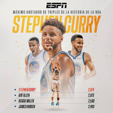
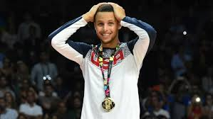

Stephen Curry.
Stephen Curry es un jugador de baloncesto estadounidense, conocido por su habilidad excepcional para lanzar de tres puntos y su impacto en el juego moderno. Nacido el 14 de marzo de 1988 en Akron, Ohio, Curry creció en Charlotte, Carolina del Norte, donde su padre, Dell Curry, también fue un jugador profesional.
Curry fue seleccionado por los Golden State Warriors como la séptima elección general en el draft de 2009. Desde entonces, ha transformado la franquicia y el juego de baloncesto, siendo considerado uno de los mejores tiradores en la historia de la NBA.
Maximos logros.
Tres veces campeón de la NBA (2015, 2017, 2018).

Dos veces MVP de la temporada regular (2015, 2016), siendo el primer jugador en recibir el premio de manera unánime en 2016.

Selecciones al All-Star: Ha sido seleccionado para el All-Star Game en múltiples ocasiones,
destacándose como uno de los mejores jugadores de la liga.

Títulos de máximo anotador: Ha sido el máximo anotador de la NBA en varias temporadas.
MVP de las Finales de la NBA: Recibió este reconocimiento en 2022 tras su actuación destacada en las Finales.
 Medalla de Oro Olímpica: Curry ha representado a Estados Unidos en los Juegos Olímpicos, ganando medallas de oro en 2010
(Copa del Mundo) y en 2021 (Juegos Olímpicos de Tokio).
Medalla de Oro Olímpica: Curry ha representado a Estados Unidos en los Juegos Olímpicos, ganando medallas de oro en 2010
(Copa del Mundo) y en 2021 (Juegos Olímpicos de Tokio).